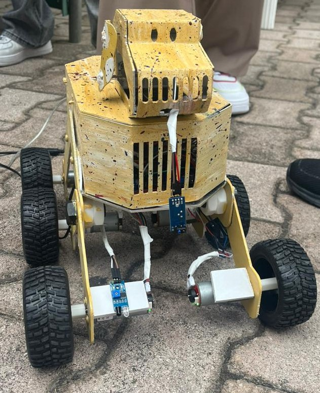

01BLINKER — Robotic Assistant for Visually Impaired Navigation
A six-wheel assistive rover designed to help visually impaired users navigate campus environments through obstacle detection, IMU-based directional guidance and embedded control.
SolidWorks
LabVIEW
NI myRIO
IR Sensors
View Project
→